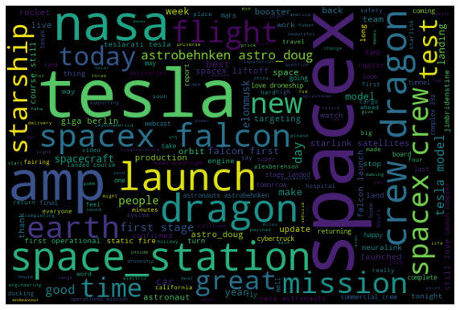
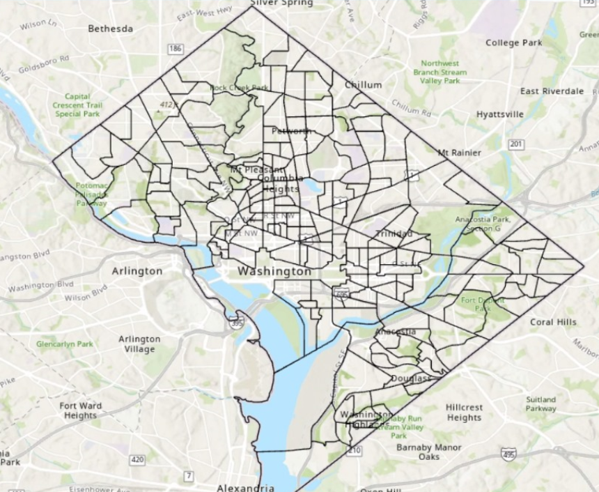

Hello! I'm Sanskriti Shivhare, a data science enthusiast with a Master’s degree from George Washington University and a rich background in Computer Science from SRM Institute of Science and Technology. I'm passionate about turning data into compelling stories and actionable insights.
In this portfolio, you'll find a blend of my professional journey, key skills, detailed resume, and a collection of projects that showcase my expertise in data analytics, machine learning, and more.
Join me in exploring the fascinating world of data science – from intricate analyses to innovative solutions. Feel free to connect with me through my email or explore my LinkedIn and GitHub profiles.
Dive into my portfolio to discover more about my professional adventures and the projects that fuel my passion for data!

Enhancing information accessibility through advanced NLP and machine learning algorithms for efficient text summarization, saving time and maximizing productivity.

Utilizing Python and PostgreSQL for in-depth Twitter sentiment analysis on Elon Musk, revealing public opinion trends through advanced NLP techniques and data visualization.

Conducted a comprehensive analysis of consumer readiness for automated rideshare services using R, revealing key insights into public perception and the impact on the ridesharing business model.

Utilized Python and GIS tools to analyze post-pandemic urban crime dynamics across 500 cities, revealing a 25% increase in crime rates and aiding law enforcement in strategic resource allocation.

Developing a highly accurate machine learning model for early heart disease prediction, complemented by insightful data visualizations in Tableau to uncover key health attribute correlations.

Developed a deep learning-based drowsiness detection system achieving 91% accuracy, utilizing facial landmark detection and EAR algorithms to enhance road safety by real-time monitoring of driver alertness.
Developed an integrated PowerBI expense management dashboard, achieving a 15% reduction in expenditures by enhancing data visualization and financial analysis for organizational decision-making.

Developed a predictive model using OBD-II data for personalized driver behavior analysis, enhancing insurance premium accuracy by 20% and promoting efficient driving habits.